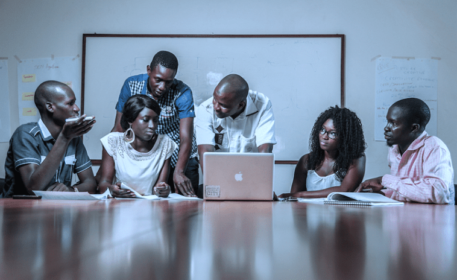

Parler de sa population revient à ressortir la diversité ethnique, culturelle et religieuse qui y existe. Prenons par exemple le nombre d'ethnies, nous avons à peu près 2000 ethnies selon le site "wikipédia"tout en sachant que les données sont des estimations non précises. Idem aussi pour les langues qui varient entre 200 à 2000. Ceci, montrant bien les différentes cultures, les différentes coutumes qui interagissent au sein de mon continent.
L'Afrique compte 55 pays (d'autres informations données sont 54 pays) divisés en 6 régions qui sont:
.jpg)
.jpg)

L'Afrique du Nord dans lequel se trouve l'Algérie, l'Égypte, la Libye, le Maroc, la Mauritanie,
la République arabe sahraouie démocratique et la Tunisie.
L'Afrique du Sud avec les pays suivants: : Afrique du Sud, Angola, Botswana, Lesotho,
Malawi, Mozambique, Namibie, Swaziland, Zambie et Zimbabwe.
L'Afrique de L'OUEST: Bénin, Burkina Faso, Cabo Verde, Côte
d'Ivoire, Gambie, Ghana, Guinée Conakry, Guinée-Bissau, Libéria, Mali,
Niger, Nigéria, Sénégal, Sierra Leone et Togo.
L'Afrique de l'EST: Comores, Djibouti, Ethiopie, Érythrée, Kenya,
Madagascar, Maurice, Ouganda, Rwanda, Seychelles, Somalie,
Soudan du Sud, Soudan et Tanzanie.
L'Afrique central: Burundi, Cameroun, Congo, Gabon, Guinée
équatoriale, République centrafricaine, République démocratique
du Congo, São Tomé-et-Príncipe et Tchad.
Il faut savoir que les humains ne sont pas les seuls habitants de mon continent car parmi eux nous avons les animaux qui vivent dans les forêts ou savanes. Admirez ci-dessous la beauté des savanes africaines avec leurs habitants.
Taxé de pauvre car ayant une difficulté à s'adapter à la mondialisation dont il n'est pas précurseur, mon Afrique jusque là essaye de faire de son mieux malgrè les politiques totalement différentes de sa réalité.
Aujourd'hui déterminée à sortir de cette situation et à s'imposer à l'international, la jeunesse de mon continent conscient des défis à relever, est prête à prendre en main son avenir. Elle est prête à s'affirmer et à voir son Afrique devenir un continent développé. Et cela en investissant dans la formation, dans la politique, dans l'union, dans la collaboration, dans la solidarité et surtout dans le travail.
Aujourd'hui déterminée à sortir de cette situation et à s'imposer à l'international, la jeunesse de mon continent conscient des défis à relever, est prête à prendre en main son avenir. Elle est prête à s'affirmer et à voir son Afrique devenir un continent développé. Et cela en investissant dans la formation, dans la politique, dans l'union, dans la collaboration, dans la solidarité et surtout dans le travail.

Beaucoup à dire, beaucoup à faire, beaucoup à réaliser et beaucoup à découvrir dans Mon Afrique. Maintenant, il appartient qu'à nous, la jeunesse africaine, de changer les choses vers un meilleur devenir. Retour